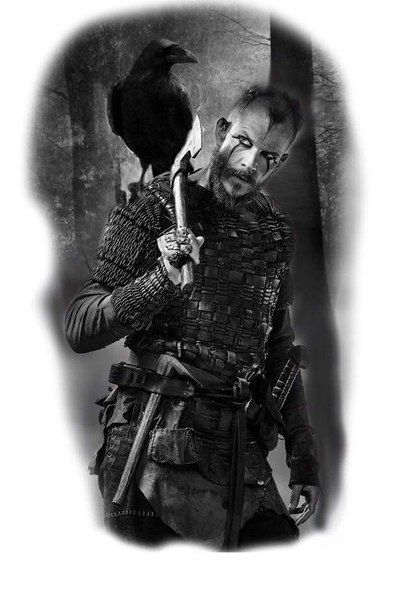

“Some men lust for women, and others lust for gold, but I only lust to please the gods.”
— Floki, Vikings, Season 3: Born Again

Biography
Floki is a boat builder and incorrigible trickster, who also happens to be Ragnar Lothbrok's eccentric and closest friend. Committed to helping Ragnar sail west, he secretly designs and builds a new generation of Viking longboats for their voyage across the ocean westward. He is also the spouse of the late Helga, the father of the late Angrboda and adoptive father of the late Tanaruz.
Floki typifies a neurotic person with a highly balanced personality. Possessing reasonable fear, and vast intellect, he is able to easily build ships with special traits to them and wisely does not hold himself as immune as Ragnar does. Instead, he forever keeps himself a student of the world around him, and is always at attention, like he should be.